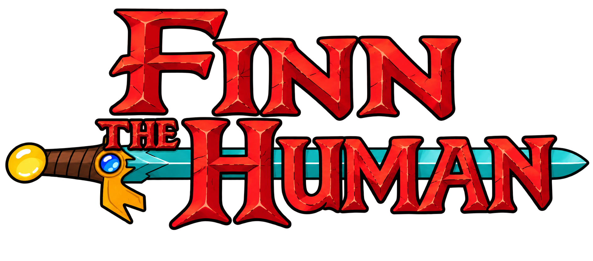

Sobre Finn el humano
Finn el Humano es el protagonista principal de Hora de Aventura. Conocido por su espíritu noble, su cabello rubio oculto bajo una gorra de oso blanca y su mochila verde, es el último humano conocido en la Tierra de Ooo durante gran parte de la historia. A lo largo de la serie, Finn pasa de ser un niño impulsivo y entusiasmado por la aventura a convertirse en un héroe maduro, empático y valiente. Siempre guiado por un fuerte sentido de la moralidad, Finn enfrenta desde monstruos gigantescos y reyes locos hasta sus propios dilemas personales, todo sin perder nunca el deseo de hacer el bien.